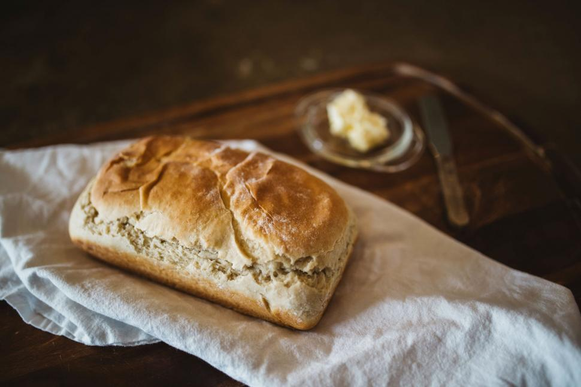

Homemade Bread Loaf

What is better than the smell of bread baking? With this recipe
you wont need to get bread from the store anymore. With just a few simple
ingredients you will be making your own bread like a pro.
Create your own perfect loaf of bread, that will handle your thickest
sandwich and will stay soft for days ready for you to enjoy.
Ingredients
- 1 cup + 3 tbps Milk (280g)
- 2 tbsp Sugar (30g)
- 2 tbsp Olive Oil (30g)
- 2 tsp Yeast (7g)
- 1 tsp Salt
- 3 cups Strong Bread Flower (420g)
(13% protein)
Steps
- Warm milk add salt, sugar, olive oil, and yeast. Stir till combined
- Add flour into mixer, gently add milk mixture to the flower.
- Mix on medium speed till dough comes together. Increase speed to high
and kneed for 3 minutes.
- Grease hands and a bowl, then shape dough into a ball.
- Cover dough and allow to rise for 2 hours. Dough should triple in size.
- Grease a loaf pan.
- Roll dough into a rectangle, use your pan for reference.
- Roll dough into a tube shape then place into your pan seam side down.
(You can press gently down on the dough for a more even rise)
- Cover and allow to rise for 1 hour, or until the dough has risen above
the top of your loaf pan.
- Bake bread in 350 degrees F for 25 minutes.
(If you overbake the bread will be dry.)
- Optional: While bread is still hot, you may butter the top.
- Allow to cool for 1 hour before you can cut and enjoy your bread.
Home